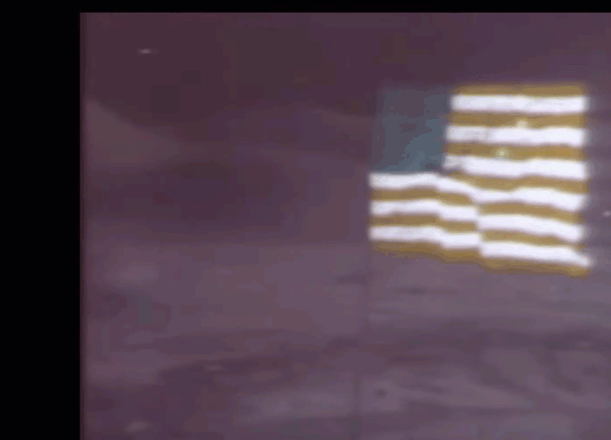
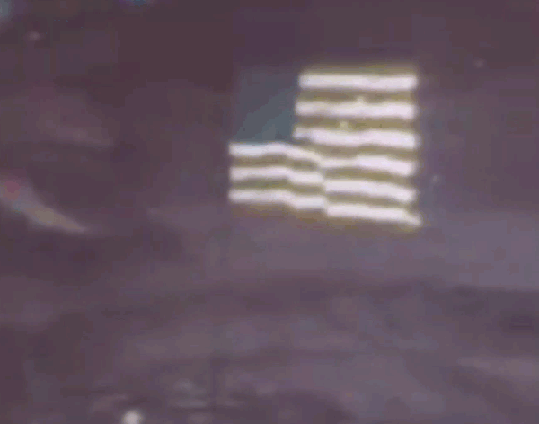
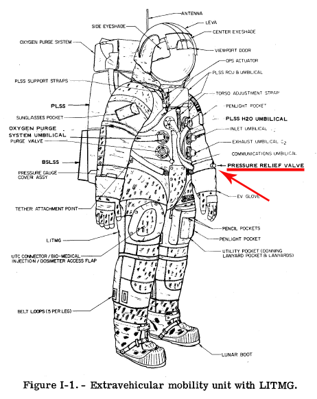
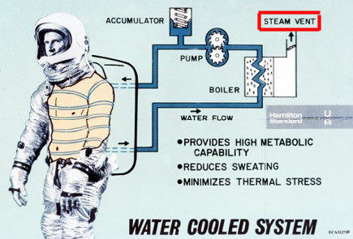
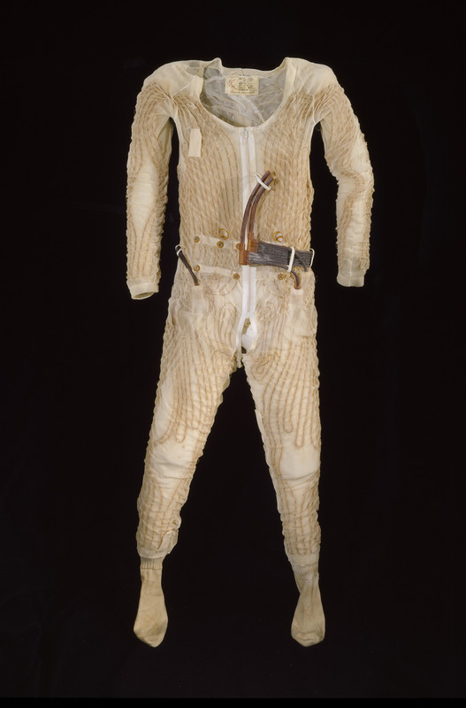
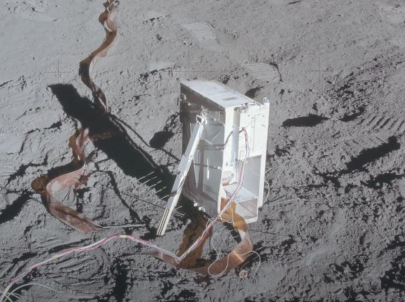
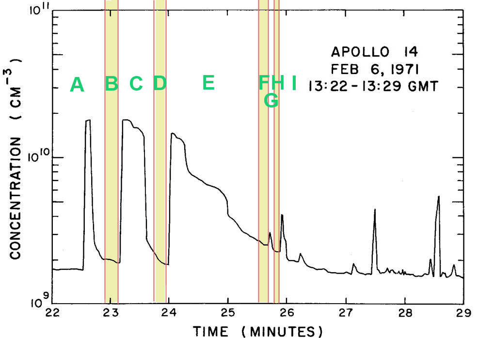
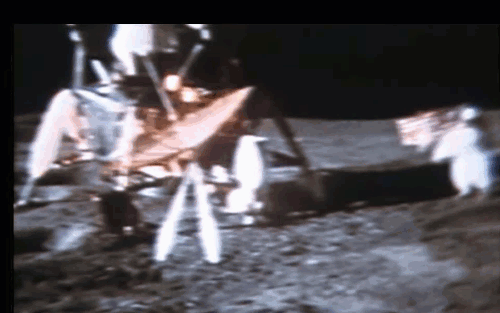
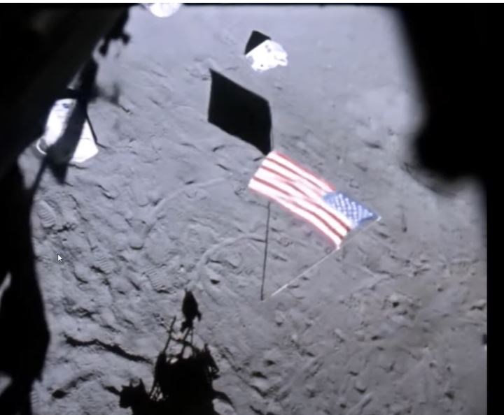

As correctly said and as confirmed by this GIF

The movement of the flag takes place before the astronaut passes by it. This excludes that the oscillation of the flag occurred due to the displacement of air caused by the movement of the astronaut, since any disturbance caused by the movement follows the body in motion, and only in very special cases of displacement at high speed (e.g. a subway train that reaches a station by moving the air in the tunnel) could a displacement of air precede the arrival of the body in motion, and this is certainly not the case, also because if the displacement of air had actually preceded the astronaut, we should have seen the flag at least rotate on itself immediately after the passage, since the displacement of air that follows the moving body is several orders of magnitude more intense than that which precedes it.
Instead, not only was this effect of strong disturbance after the passage not noticed, but on the contrary the subsequent slight waving of the flag that became "pendulum", excluded any presence of atmospheric air. In other words, the flag continued to swing for more than 30 sec. as you can see perfectly in this animated image and accelerated to 4x.

and this absolutely excludes that the flag was in the atmosphere. But then what did that oscillation of the flag depend on? Only two factors could have moved the flag before the astronaut's arrival: the first is a brief release of oxygen from the suit's pressure-relief valve, positioned on the left sleeve, the one closest to the flag, and facing the front, and whose gas emission can precede the astronaut, also considering the high speed with which gas molecules move in a vacuum and where the race may have changed the internal pressure of the suit, requiring adjustment. This slight emission of gas would be perfectly in line with the minimum movement of the flag.

The other factor could be the launch of very small grains of regolith due to the astronaut's run, grains that, being lifted by the running boots and not having the atmosphere that slows them down, can move far away, ahead of the astronaut. One of these causes, or perhaps both, could have caused the oscillation of the flag, while we can categorically exclude the displacement of air produced by the astronaut's run, since careful observation of the phenomenon of successive pendulum oscillation of the flag has excluded the presence of atmospheric air, as we can also rule out electrostatic causes, as the video shows another astronaut cautiously approaching the flag leaving it perfectly still.
In this case, the answer is certain. As we see in this image, the flag, from perfectly still, begins to swing during the astronaut's jumps.

This behavior rules out the explanation that the flag's oscillation was caused by air displaced by the astronauts, as not only are they too far from the flag to produce it, but they are also stationary and a jump does not produce horizontal air displacements. The vibrations produced by the astronaut's jumps, on the other hand, are those of a mass of at least 180 kg that rises with maximum force and falls back to the ground, returning all the energy impressed in the jump to the ground. It is very possible that such an impact causes a slight oscillation of the flag, also considering the lack of air that does not stop the flag and the presence of the horizontal rod that supports the flag, and which makes the lower free angle very similar to the needle of a seismograph.
The images, however, are authentic, and the free angle of the flag is set in motion during the jumps. Of course, even in this case it is not possible to completely exclude the emission of oxygen from the relief valve of the suit (pressure relief valve), located on the front of the sleeve, since the astronaut is facing the flag, and as for the astronaut's run in the previous example, here it could have been the repeated jump that produced a momentary overpressure in the suit, compensated by an emission of oxygen from the special valve.
It should then be added that the oscillation of the flag increases when one of the two astronauts passes close to it, and in this case, given the high position of the flag, the emission of steam from the boiler must be taken into consideration which, combined with the porous sublimator of the PLSS, emitted water vapor into the vacuum, an indispensable action to regulate the temperature of the fluid circulating in the undersuit and that emission of steam may have given rise to the additional thrust of the flag. Here we see the diagram of the PLSS with the water vapor vent valves and then the undersuit with the tubes that regulated body temperature.


As we can see, by knowing more about the functionality of the astronauts' suits, we have shown that occasional emissions of oxygen or vapor into the lunar vacuum were inevitable, precisely to regulate the respiratory and thermal comfort of astronauts who had to remain on the lunar surface for several hours, performing even heavy tasks that would have involved so much high oxygen consumption, how much body temperature changes to be adequately compensated. It is more than normal that objects such as lunar bands, which had a free corner of the flag capable of intercepting these vapor/oxygen emissions, could occasionally reveal them with light and prolonged pendulum swaying when the astronauts had come close enough.
What should be absolutely excluded is the presence of air in the scene, as the flag has a pendulum oscillation, for almost 40 seconds as shown in the image below where the braked oscillation of a flag in the atmosphere is compared with the pendulum oscillation of the flag in the vacuum of the example under observation.

This is also a case where the movements of the flag have a certain origin and there is a scientific document that justifies them perfectly. It should be clarified that the astronauts had returned to the LEM to prepare for the restart. They had to get rid of part of the backpacks to lighten the weight. To do this procedure they had to mount a helmet and OPS (Oxygen Purge System) both used for the restarts, then depressurize the LEM and open the door, throwing the heavy PLSS outside. Which was later done and documented.
On that occasion, the depressurization operation was done three times, because the astronaut Shepard had a problem with the OPS and could not connect it correctly to the suit, so the depressurization procedure had to be interrupted, the valve that expelled oxygen to the outside had to be closed and the LEM had to be repressurized. In this 1974 document, in PDF (on page 69 of the document and page 71 of the pdf), the procedure repeated three times for problems with Shephard's suit is documented. (COLD CATHODE GAUGE EXPERIMENT)
We have the graph of the Cold Cathode Gauge Experiment instrument,

which measured the presence of gas in the lunar exosphere and we show it in the figure below.

This graph (page 72 of the document and 74 of the pdf) taken from a 1974 document, well before the release of the SCF DVDs, shows three peaks corresponding to the opening of the depressurization valve on the LEM door and three other smaller peaks, the first corresponding to the opening of the door and the other two to the launch on the ground of the two backpacks containing the tanks not completely exhausted. How was the movement of the flag determined?
It must be said that this had been placed in front of the LEM door and on a slight slope that sloped down towards the LEM and the flag had the horizontal pole not perfectly parallel to the ground.

This meant that its static equilibrium position was with the rod in the direction of the lem. We therefore have 9 phases.
Initially the flag is not visible (Phase A) and when the first pulse of oxygen comes out of the door valve, the flag bends rotating in the opposite direction to the lem, but this impulse, in fact, frees it from the grip of the regolith that held it in place. When the flow of gas stops, the flag, momentarily freed from the grip of the regolith, rotates by gravity with the drape towards the LEM and phase B begins, with the drape entering the camera's field of view.
With phase C begins a new decompression and expulsion of gas (second peak) which slowly decreases bringing back, with phase D, the flag with the drape visible again. Then in phase E the definitive, longer decompression makes the flag disappear for 2 minutes. When this decompression also weakens, it brings the flag back into the field of view with phase F.
With phases G and H we have a new small pulse that moves the drape that we see reappear after a few seconds and with phase I, corresponding to the opening of the door, the little oxygen left in the LEM, comes out so violently with the door open that it definitively rotates the flag out of the field of view of the camera, and in that position the flag remains until the moment of restart of the ascent module, As evidenced by this photo below.

These 9 rather complicated phases to explain with static images, are instead perfectly explained in this video, where they were put in sync with the images of the documentary American Moon, also in the linked video the phases of exit and entry of the flag into the field of view of the camera were carefully analyzed and it turned out that the exit due to the gas pulses was more than twice as fast as the entry into the field of view due to the gravitational attraction of the horizontal flagpole.
In conclusion: this reconstruction with experimental data from 1974 can perfectly explain the movement of the flag, while, be careful: other "conspiracy" interpretations would not stand up, as they would imagine opposite air strokes, such as the Sirocco and the Tramontana alternating a few minutes apart, or fortuitous but repeated openings of windows on opposite sides of the film set, which would have determined opposite air currents, which is completely absurd and which would certainly not have escaped a direction that had nothing to control in the film except a perfect stillness of the scene.
This proposal is now the only credible explanation because it is justified by a 1974 document (therefore well before conspiracy conjectures) that links those movements of the flag in a precise and chronological way to the momentary presence of oxygen concentrations in the lunar exosphere. If this explanation is rejected, it becomes mandatory to propose an alternative that is equally credible and not out of the air, such as the alternation of opposing air currents on a film set. So I'm curious to know you and of course you will have to explain chronologically the duration of the movements of the flag, and why the exit from the field of vision of the flag was always fast, while the return was always slow and above all how opposing air strokes were possible on a film set, where, since there were no actors on the set, the immobility of the flags was the first and only concern of the director.
Chapters: